13.1 Historical Introduction
The term narcotic is derived from the Greek word narkoun, which means “to make numb.” Historically, the term referred to any substance that could relieve pain, dull senses, or induce sleep. The history of narcotic medications is as old as the history of pharmacy, and even the history of medicine itself. Some natural and synthetic narcotic compounds are still used today, whereas others have a strictly historical or literary significance. For example, water lilies have been used for thousands of years by Asian, African, and European cultures for stomach illnesses and skin conditions, as well as for pain relief. While the term water lily has been used to refer to dozens of different aquatic plants, some scholars believe that the white lotus, or Egyptian lotus (the white-flowered Nymphaea), is the pleasure- and sleep-inducing plant ingested by the famous Lotus Eaters in Homer’s The Odyssey. Ancient Egyptians believed that same plant gave them strength and, therefore, created ceremonial perfumes from its extracts.
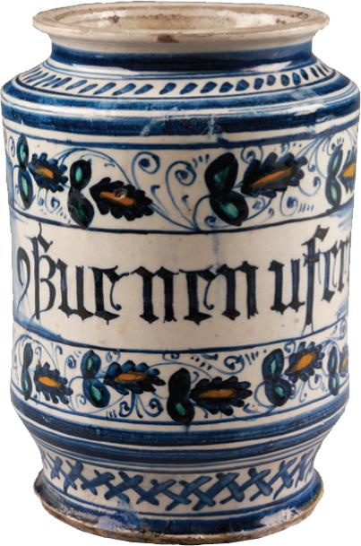
Opium Poppy
Although the water lily and white lotus plants were recognized by early cultures for their pain-relieving qualities, the opium poppy—or Papaver somniferum—was discovered to have more potent analgesic properties and became a highly sought-after medicinal cure. The opium poppy plant is thought to be the originator of all narcotics and, to this day, is the primary source of most natural narcotic substances.
Unmatched in its ability to elevate mood, induce sleep, and relieve pain, the opium poppy was well-known among early Mesopotamian civilizations, according to papyrus records dating from 5000 bce. Archaeological evidence has uncovered images of poppies in Egyptian hieroglyphics as well as in artifacts buried in the tombs of pharaohs. These early Middle Eastern cultures relied on harvesters to gather the spent poppy heads and scrape their capsules. This scoring process released a milky-white sap called latex. Once collected, the sticky exudate, or raw opium, was added to food (such as poppy cakes) or drunk as a beverage (such as juice). The raw opium was found to be a particularly effective painkiller, and this natural medicinal remedy became a leading export to Europe and other regions of Asia.
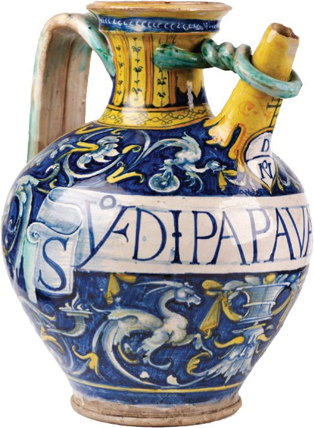
Opium Use through the Centuries
With the introduction of the opium poppy in Europe and Asia, the popularity of this medicinal plant grew—and so did its applications. Ancient Greek and Roman practitioners used crude drugs compounded from the opium poppy to quiet children and soothe pain. Two of their most notable physicians—Hippocrates and Galen—were advocates of opium use, prescribing the extract for not only pain relief and sleeplessness but also for a host of other conditions, such as asthma, headaches, epilepsy, fevers, and coughs. In fact, the sleep-inducing qualities of the opium poppy are recognized in their cultures’ mythology: The Greek gods Hypnos (god of sleep) and Morpheus (god of dreams) are frequently depicted wearing or carrying the poppy flower, as is the Roman god of sleep, Somnos.
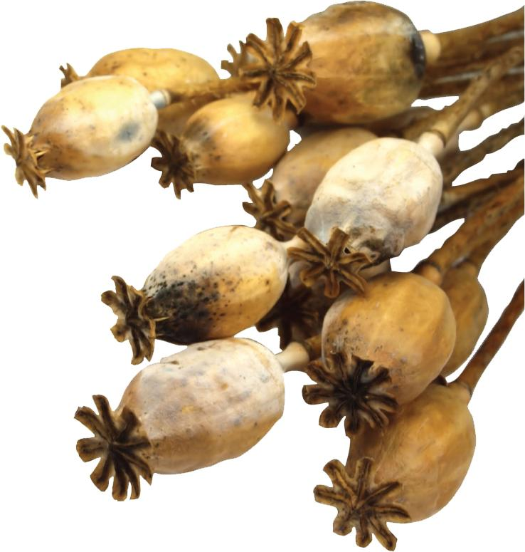
These early civilizations also recognized the toxic properties of opium, with documented evidence pointing to its use as a poison, particularly among the elderly. An opium overdose led to respiratory depression and, subsequently, death.
Opium was introduced to Western Asia in the 8th century through Middle Eastern and European trade. Britain became the main exporter of opium, which was grown in the fields of India; in return, the British merchants imported tea from China. With Asia’s thriving opium import business, access to opium-based products became widespread. Asian practitioners prescribed opium regularly to alleviate the pain associated with medical conditions and surgical procedures. Outside of medical practices, individuals self-medicated by ingesting, drinking, and—later—smoking opium derivatives to alter their physical conditions or psychological states. Opium became one of the most widely used drugs in Asia, contributing to the drug’s cultural association with this continent.
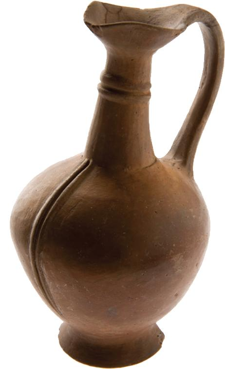
By the 18th century, the smoking of opium had led to widespread addiction among its users and an increase in crime to obtain the drug. Consequently, the Chinese government issued a ban on the importation of opium, upsetting the long-standing, profitable trade between Britain and China and culminating in the Opium Wars (1839–1842 and 1856–1860). By the advent of the 20th century, roughly a quarter of China’s population was addicted to smoked opium. In fact, many Chinese immigrants to the United States during this period brought their addictive lifestyle to their adopted homeland and established opium dens, or establishments where addicts could smoke opium in a social setting.
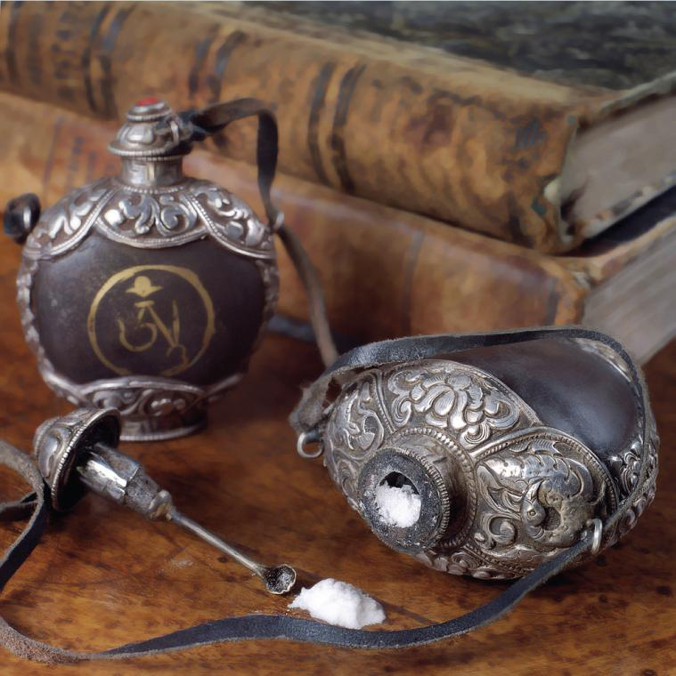
Laudanum, an Early Medicinal Opiate
As opium use spread around the world, experimentation with the poppy plant’s extracts led to the discovery of several medicinal remedies. In the 16th century in Europe, laudanum—a preparation made from combining ground opium powder with alcohol—was used to soothe pain, calm nervousness, and elevate mood. An early formulation of laudanum was two ounces of opium, one ounce of saffron, and a drachm of cloves and cinnamon dissolved in a pint of wine. These added ingredients masked the bitter taste of the opium, making ingestion of the drug more palatable.
By the 19th century, laudanum had spread to the United States and was used to alleviate pain from migraines, cure intestinal upset, and induce sleep. This opiate also became a commonly prescribed elixir for fussy, colicky, or teething children. Brands such as Godfrey’s Cordial and Mrs. Winslow’s Soothing Syrup were pitched to exasperated parents looking for some relief for their children—as well as for themselves.
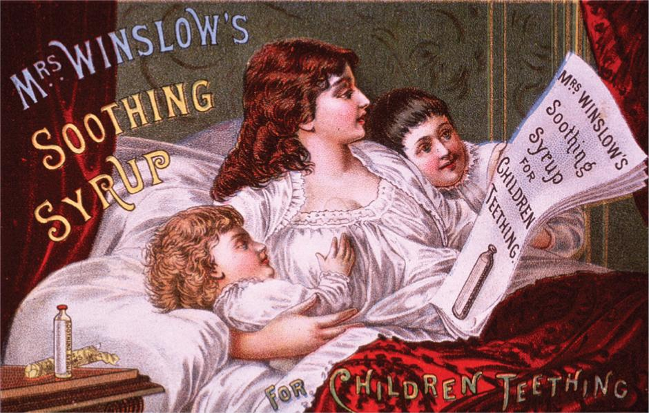
Extraction of Morphine
In 1804, German pharmacist Friedrich Wilhelm Sertürner isolated the alkaloid morphine from the opium poppy. He named the substance morphium after Morpheus, the Greek god of dreams. Morphine, as the opiate derivative is called today, was used to treat patients suffering from acute pain and in need of quick relief. Available in oral forms, morphine was marketed under various names, including Papine (named after the opium poppy’s plant species).
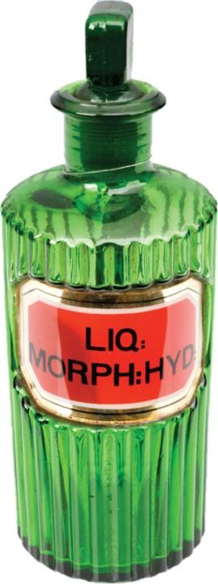
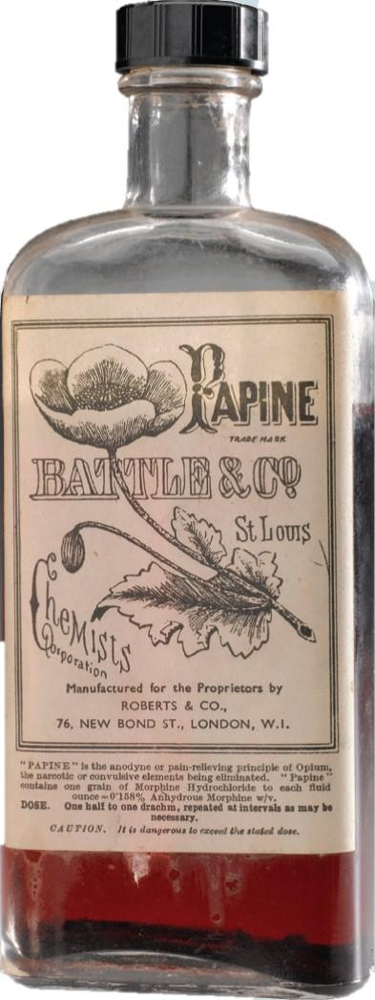
Morphine became even more popular with the invention of the hypodermic needle in the middle of the 19th century, which allowed the drug to be administered in an injectable form. Ampules of morphine were commonly used by medics during the Civil War to alleviate soldiers’ pain from injuries or field amputations. This practice supposedly led to widespread addiction among its military ranks.
Today, morphine is a powerful narcotic (in fact, 10 times more powerful than opium) that continues to be prescribed by healthcare professionals. Morphine is most commonly ordered as an around-the-clock treatment for moderate-to-severe pain, such as that caused by surgery, major injury, or cancer.
Emergence of Codeine, Paregoric, and Heroin
A milder opiate alkaloid, codeine, was isolated from morphine in 1832 by French chemist Pierre-Jean Robiquet. This oral preparation had analgesic and antitussive properties and, consequently, was prescribed for pain relief and cough suppression. According to the World Health Organization, codeine used to be the most commonly used drug in the world.
Another mild opiate popular in the 19th century was paregoric, a camphorated tincture of opium that was used as an anodyne, or a medication used to treat pain. This household remedy contained two grains of powdered opium mixed with anise oil, benzoic acid, camphor, and glycerin and was used to treat diarrhea, relieve pain from teething, and suppress coughing.
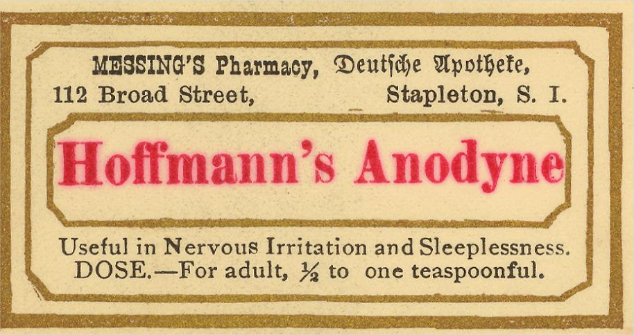
A stronger opiate alkaloid, heroin, was first synthesized from morphine in 1874 by English research chemist Charles R.A. Wright. Heroin was eventually developed and marketed by the Bayer Company as a painkiller and cough suppressant and was frequently administered to patients diagnosed with tuberculosis. This opiate-based preparation was also prescribed to treat morphine addiction—until research proved that heroin was twice as powerful as morphine and highly addictive.
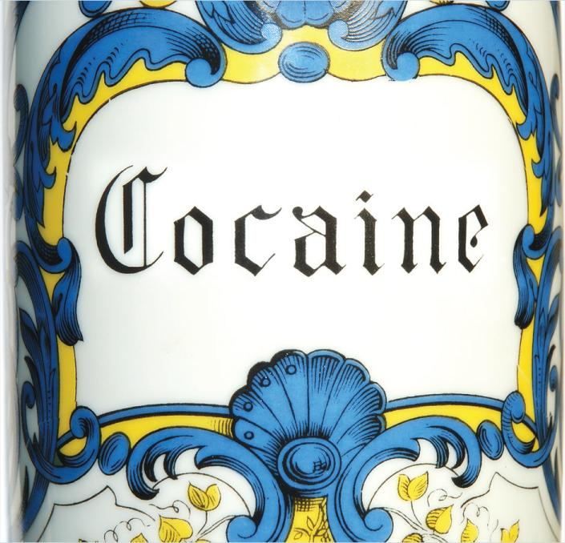
In 1903, Bayer ceased production and sales of products containing heroin due to a significant number of deaths caused by the potent narcotic. By 1924, heroin was banned from medicinal use. Today, heroin’s continued recreational use has made this opiate a commonly abused illegal narcotic.
Coca Plant and Cocaine
With the dawning of the 20th century, a number of other plant substances began to be widely used for both medicinal and recreational purposes. The plant Erythroxylum coca, whose leaves contain the alkaloid cocaine, became a key ingredient in a number of over-the-counter products. A recognized local anesthetic, cocaine dates back to approximately 3000
The euphoric effects of coca came to the attention of the world with the publication of a book extolling the virtues of the plant. The author of the book, a 19th-century Italian doctor named Paolo Mantegazza, had himself experienced the effects of coca while living in Peru. Cocaine quickly became a component in several patented medicines, including cough syrups, various tonics, and throat lozenges. Cocaine also was an ingredient in coca wine and a “temperance drink” known as Coca-Cola. In fact, for more than two decades, cocaine was part of the formula for this soft drink, until mounting concerns over the effects of cocaine forced the manufacturer to switch to using caffeine instead.
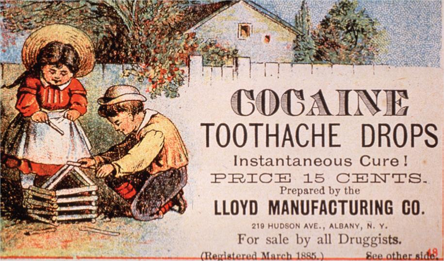
Cannabis Plant and Marijuana
Another medicinal plant native to the Asian continent shares a similar history to the Papaver somniferum plant: the Cannabis, or the plant source of marijuana. The use of the cannabis plant can be traced back to 2737
Other ancient documents provide evidence that some early civilizations in the Far East ate the seeds of the cannabis plant. These seeds were also discovered in sacrificial vessels found in ancient tombs in China. The presence of the cannabis seeds supposedly welcomed the dead into the afterlife. In India, prior to 1000
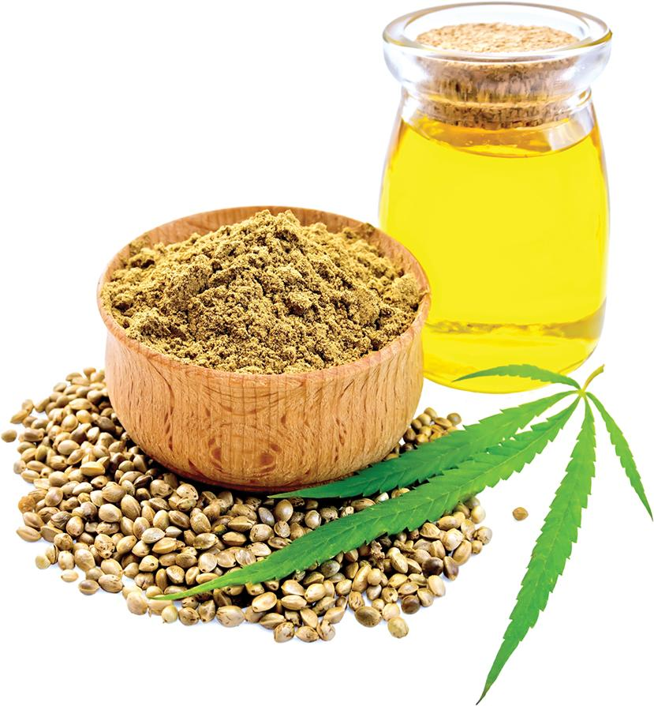
The idea of using the cannabis plant to cure various ailments quickly spread across Asia and to the neighboring continent of Africa, eventually finding its way to the European continent in 500
The plant arrived in the United States in the 16th century when European explorers brought it over for cultivation. In the colonies, cannabis was grown to provide a source of hemp—a fiber used in ropes, cording, burlap, and clothing. By the end of the 19th century, hemp became a significant cash crop, particularly among the southern states.
Cannabis also became an ingredient in a number of medicinal preparations and was listed in the 1854 US Dispensatory as a narcotic. The medication was frequently prescribed for women to ease childbirth pain and treat gynecological conditions. The medical uses of cannabis declined at the end of the 19th century as consumers turned to faster-acting injectable drugs and opiate-based derivatives to treat their illnesses.
At the beginning of the 20th century, cannabis was viewed by the medical community as more of an intoxicant than a medication. This changing perception, coupled with the new federal narcotics regulations, moved the drug out of mainstream medicine and into an alternative form of medicine. In the 1920s, alcohol prohibition encouraged individuals to pursue other means of achieving a euphoric state, and marijuana was the recreational drug of choice. Marijuana clubs, known as tea pads, were established, allowing users to smoke marijuana in a social setting. Like the opium dens from the previous century, club participants smoked to induce relaxation and create a sense of euphoria.
By 1937, the US government passed the Marihuana [sic] Tax Act, which required that all individuals using marijuana for medicinal purposes had to register and pay a tax of $1 per ounce. Individuals using marijuana for nonmedicinal purposes had to register and pay a tax of $100 per ounce. Needless to say, the legislation largely failed, and cannabis was removed from the US Pharmacopeia and National Formulary in 1941.
Today, marijuana is classified as a Schedule I controlled substance by the US Drug Enforcement Administration (DEA), making it an illegal drug at the federal level. However, many states have legalized marijuana for medicinal purposes or recreational use. The use of marijuana and its components, or cannabinoids, continues to be the subject of research. Dronabinol, a synthetic tetrahydrocannabinol (THC) that is the main active ingredient in marijuana, was first approved in 1985 for the treatment of nausea and vomiting associated with cancer chemotherapy and was later approved for the treatment of anorexia in patients with acquired immune deficiency syndrome (AIDS). Nabilone, another synthetic cannabinoid, was also approved in 1985 for the treatment of nausea and vomiting associated with chemotherapy. In 2018, a purified form of the cannabidiol (CBD), a nonintoxicating component of marijuana, was approved to treat seizures associated with two forms of epilepsy in patients two years old and older.
Regulation of Opiate Narcotics
Although the dangers of opiate use were documented as early as the beginning of the 19th century, opiate addiction became an international health concern at the start of the 20th century. The patented medicines containing opiate extracts were widely advertised by their manufacturers, touting their “cure-all” properties, and consumers fell victim to their addictive qualities.
In 1906, President Theodore Roosevelt called for a conference among nations to examine the opium trade. Out of that conference—and several subsequent conferences—the US Congress recognized the need for regulation of opiate narcotics.
In 1914, Congress passed the Harrison Narcotic Act, a form of legislation that imposed controls for the preparation and distribution of opium, coca, and their derivatives. This act required that manufacturers, importers, pharmacists, and physicians who handled narcotics be licensed. However, the manufacturers of patented opiate preparations did not need a license as long as their remedies did not contain “more than two grains of opium, or more than one-fourth of a grain of morphine, or more than one-eighth of a grain of heroin in one avoirdupois ounce.”
In addition, legislators passed a narcotics stamp tax, requiring manufacturers and distributors to purchase a narcotics stamp from the US Treasury Department that was affixed to the packaging of their products. That way, the federal government could track the narcotics trade industry. However, the passage of this legislation inadvertently served as a catalyst for the creation of underground trafficking networks for illegal opiate narcotics.
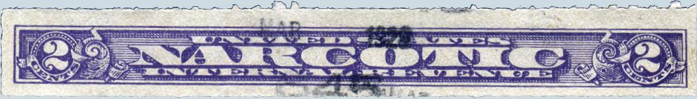
In 1930, the US government developed the Federal Bureau of Narcotics to oversee and enforce regulations related to the import, export, and taxation of narcotics. At the same time, there were growing concerns in the United States that narcotics could be addictive. Consequently, the generally accepted opinion on narcotics was that they should only be used in the proven treatment of disease. Many people feared the side effects of these drugs—specifically, mental illness and violent outbursts—and the repercussions of such side effects on society. Certain outspoken individuals went so far as to predict that drugs would lead to the downfall of society.
In 1968, the Federal Bureau of Narcotics merged with the Bureau of Narcotics and Dangerous Drugs, which later became the DEA. Meanwhile, concerns about narcotics and other illicit drugs continued to grow throughout the 1960s, as protests against the Vietnam War—which some believe were fueled by the drug counterculture—and a significant number of deaths from drug overdose led to action by the federal government. In 1970, the United States enacted the Controlled Substances Act (CSA) to provide oversight and restriction regarding the prescription and use of all controlled substances, including narcotics. The DEA was created in 1973 to enforce the CSA.
Synthetic and Semisynthetic Narcotic Analgesics
Today, synthetic narcotic analgesics and semisynthetic narcotic analgesics that mimic the effects of opiates are manufactured and closely regulated by the DEA. These narcotic analgesics, commonly referred to as opioid analgesics, are important products in the pharmaceutical arsenal for the management of moderate-to-severe pain. Generic names of these medications include fentanyl, hydrocodone, hydromorphone, meperidine, methadone, oxycodone, and oxycontin, to name a few. Their misuse has become a growing problem in the 21st century.
The Centers for Disease Control and Prevention (CDC) reports that, from 1999–2017, almost 400,000 individuals died from an opioid overdose. This number rose dramatically between 1999 and 2017, with six times more overdose deaths in 2017 than in 1999. Overdoses rose by over 15% between 2020 and 2021. Today, on average, 150 individuals in the United States die from an opioid overdose every day. These deaths can be traced to both prescription opioids and, in the past decade, illicit use of heroin and illegally manufactured fentanyl. Synthetic fentanyl, which is frequently used in hospitals, is 50 times stronger than morphine and 100 times stronger than heroin. Illegally manufactured fentanyl can be even stronger than that, and lacks any control over the quality or strength of ingredients that are present in manufactured drugs that are regulated by the FDA. Illegal fentanyl overdoses and associated deaths have reached unprecedented levels in the United States, with the DEA stating that “Fentanyl is the deadliest drug threat that our nation has ever encountered.” The opioid epidemic has gotten so severe that pharmacists in most states may dispense naloxone, an opioid antagonist designed to rapidly reverse the deadly effects of an opioid overdose, without a prescription. To fight the opioid epidemic, state and federal agencies are taking a collaborative approach by educating healthcare providers and patients about opioid misuse, overdose, and prevention strategies.
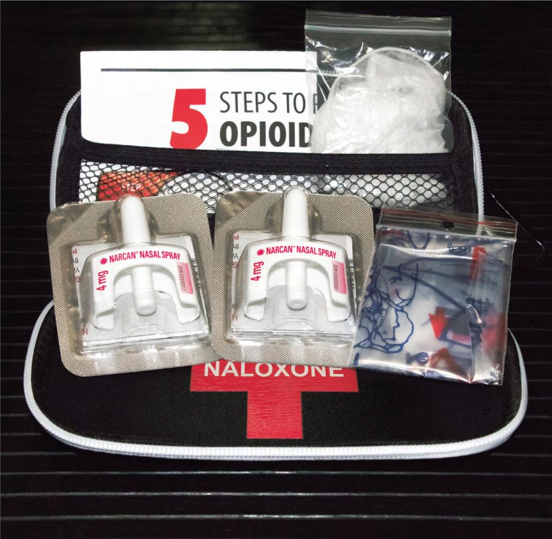